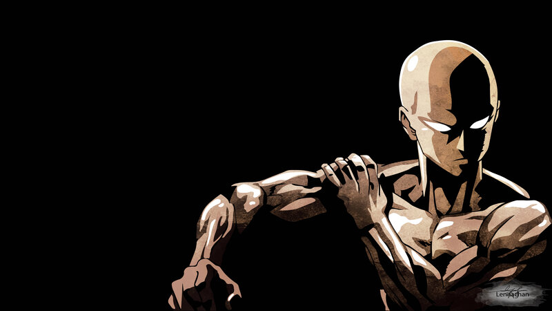
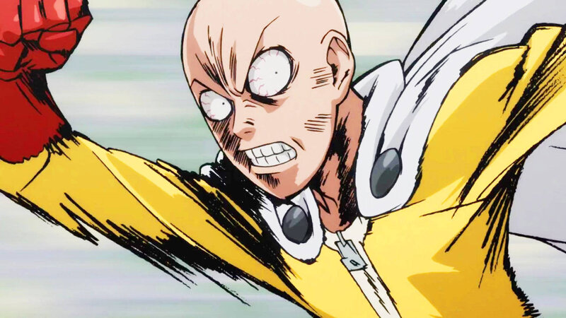
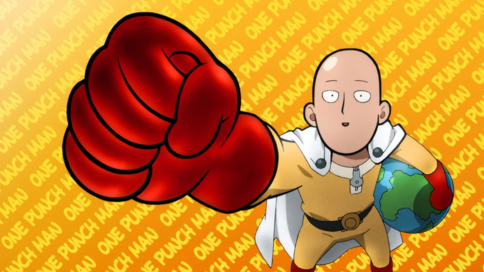

Saitama
One Punch Man
- Date Of Birth: April 21st, 1990
- Age: 25
- Occupation: A Hero For Fun

About Saitama
Saitama, also known by his hero name Caped Baldy. He is registered with the Heroes Association as a B-Class Superhero (A-Class in the webcomic) and is tasked to defend Z-City against mysterious beings.
"100 push-ups, 100 sit-ups, 100 squats, and a 10km run every single day! " Saitama
Features:

Strength
- He can decimate most foes with just one punch, no matter how big they are.
- Using his Serious Punch, he was able to destroy a huge area of land with its shock-wave, despite the fact that his punch didn't touch anything.
- In one jump he leapt from the Moon to Earth with surprising accuracy.

Speed
- Can create afterimages just by hopping side to side.
- Fast enough to run on walls.
- In one jump he leapt from the Moon to Earth with surprising accuracy.

Durability
- Tanked attacks strong enough to destroy an entire city.
- Completely resistant to telekinetic attacks from extremely powerful users e.g throwing rocks, telekinetic shock waves and a TK twister.
- Completely unfazed after being attacked by Geryuganshoop, who claimed to be the most powerful psychic in the universe.